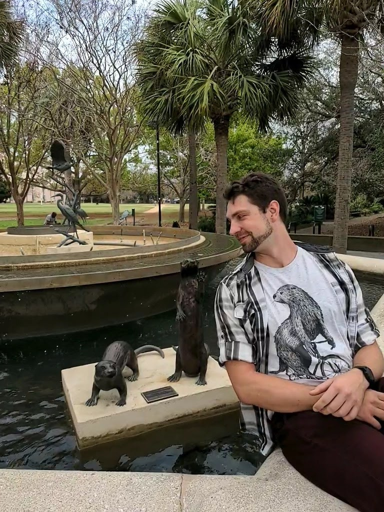
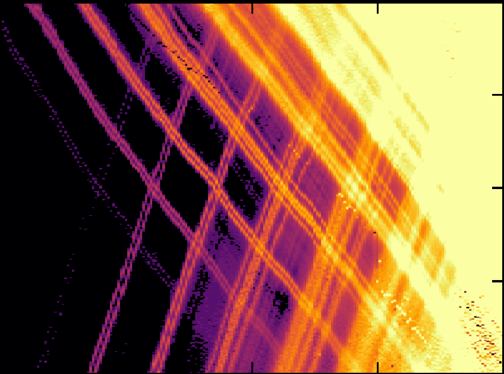

About Me

I am currently a PhD candidate at the University of Pittsburgh, doing research under supervision of Dr. Sergey Frolov.
The subfield of experimental condensed matter physics leads to a heavy utilization of modern nanofabrication tools, cryogenics, experiment controls and automation, soft skills, but also unexpected things like solving a plumbing heat management problem for parts of experimental setups.
And learning a lot about espresso of course, there is no way around it seems.
Education:
Lomonosov Moscow State University, B.S. in Physics -2016
Lomonosov Moscow State University, M.S. in Physics - 2018
University of Pittsburgh, Ph.D. in Physics: 2018-present
Research Interests:
Condensed matter physics, III-IV and IV-VI group semiconductors, semi/superconducting hybrid devices.
Quantum computing (material science and nanofabrication).
Spin-orbit interaction in low-dimensional structures.
Publications: google scholar
Spin and orbital spectroscopy in the absence of Coulomb blockade in lead telluride nanowire quantum dots - Gomanko et al.,SciPost Physics 13 (4), 089
Non-Majorana states yield nearly quantized conductance in proximatized nanowires - P.Yu, et al., Nature Physics 17 (4), 482-488
Growth of PbTe nanowires by molecular beam epitaxy - SG Schellingerhout et al., Materials for Quantum Technology 2 (1), 015001
Research

PbTe nanowire quantum dots
Group IV - VI materials are interesting for multiple applications in condensed matter physics and quantum device engineering. They generally offer strong spin-orbit interaction due to heavy mass of both elements,
and have isotopes without nuclear spin, allowing fabrication of isotopically pure materials without hyperfine decoherence channel.
Molecular Beam Epitaxy (MBE) growth of these nanowires is pretty complicated and they rarely exceed the length of ~1.5 um. This limits the degree to which one can manipulate the wires without using manipulators with dual SEM guns and place the wire over pre-fabricated gate patterns.
Fortunately, it's possible to create a random shaped Quantum Dot (QD) with just one large gate on top (Sander G Schellingerhout et al 2022 Mater. Quantum. Technol. 2 015001). The effective g-factor in this QD reaches factors of ~50 and is anisotropic.
Fascinating feature: not observed Coulomb blockade in these devices, diamonds on the picture have 2-fold degeneracy lifted by magnetic field instead of charging energy. More in scipost publication.
Current stage is to achieve better control of a multi-gate device. Right now multiple angle-deposited fine topgates are used, but with recent addition of EBPG electron beam lithography to our cleanroom we might be able to do much better fabrication, including small pitch bottom gates.
PbSe thin films
This project is in an early phase, where I am trying to go around certain fabrication issues with ion etching and make reliable Ohmic contact to thin (~50nm) PbSe Hallbars on GaAs and BaF2 substrates.
Tools commonly used in my research
This is definitely not an extensive list, but can give a quick overview over basic process of device fabrication and characterization.
Fabrication:
In the lab I mostly do either the very first part of device fabrication, which is to create a pattern of nanowire catalysts on a substrate (Si wafer for example), or the much later stage of adding leads and gates to existing nanowire.
In principle, nanowire can be placed on a chip in two ways: either through Selective Area Growth (SAG) or grown separately and then transfered to the chip somehow.
It can be either tiny tungsten needle manipulator that grabs the wire through Van der Waals forces under optical microscope or SEM or
even a non-shedding tissue (cleanrooms usually have a lot of those) dipped into the dense forest of nanowires and then the chip.
For layout creation there can be many CAD options, or even CLI C/Python utilities, but the outcome should be readable by lithography tools like mask/maskless aligners or electron beam lithography systems. Gdsii seems to be the safe reliable choice for most thigns.
Lithography can be used for both positive (metallization, liftoff) and negative (etch mask) processes.
Device that is ready has to be handled with extreme care because even small amounts of static can blow up a nanowire.
Measurements:
I used dilution refrigerators as the main tool to achieve temperatures of tens of mK to eliminate background noise. Both "dry" and "wet" systems have their own advantages and disadvantages, and it seems that there is no favourite for me yet.
Experimental lines and connectivity depends on the experiment and often includes either DC lines (pre-amps, galvanical isolation, custom-made DAC), low-frequency setups with lock-in amplifiers, RF lines and microwave filtering on the fridge and magnetic fiels with superconducting magnets
or any combination of the above.
Commercial instruments usually have necessary tools for computer connectivity and automation, but each setup still requires to modify device drives and usually use custom measurement scripts.
Contact
Email:
maksimgomanko@pitt.edu
Twitter:
https://twitter.com/starboardMax
Address:
100 Allen Hall
Pittsburgh, PA
15217
USA